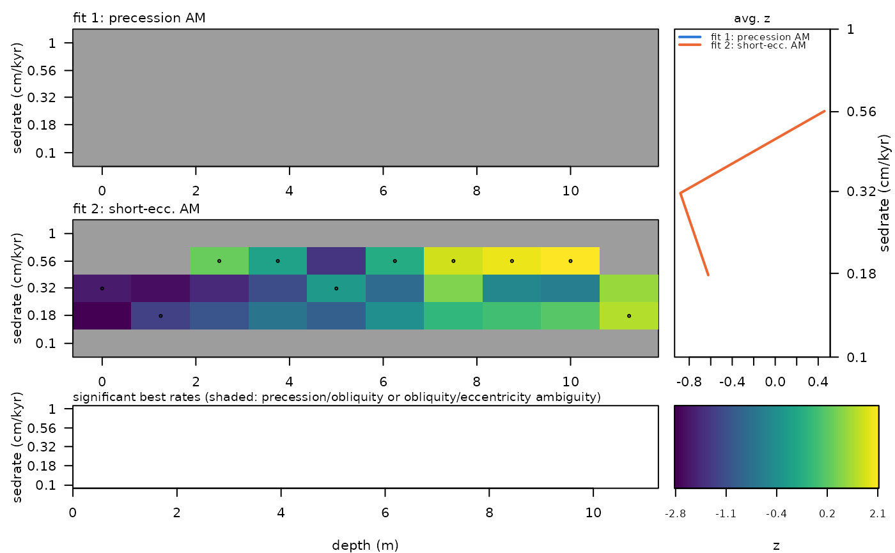

Plot the fits of win_timeOpt_multi side by side
Source:R/win_timeOpt_multi.R
plot_win_timeOpt_multi.RdPlots the (bias-corrected) z_opt of every fit of
win_timeOpt_multi as depth x sedimentation rate panels (untestable cells
greyed out, best rates marked), the average curves of all fits on one rate axis, and the
best rates per window of all fits with the 2:1 precession/obliquity ambiguity marked.
Usage
plot_win_timeOpt_multi(
multi_result = NULL,
corrected = TRUE,
n.levels = 100,
xlab = "depth (m)",
ylab = "sedrate (cm/kyr)"
)Arguments
- multi_result
Result of
win_timeOpt_multi(list of classwin_timeOpt_multi.result). Must be given (theNULLdefault fails).Default=NULL.- corrected
What is plotted (logical, TRUE or FALSE):
TRUEthe bias-corrected z-scores (z_opt; without them, i.e. withbias_correction = "none", the raw values are used),FALSEthe raw r-squared values (r_2_opt).Default=TRUE.- n.levels
Number of colour levels of the colour scale (integer, > 1).
Default=100.- xlab
Label of the depth axis (character).
Default="depth (m)".- ylab
Label of the sedimentation rate axis (character).
Default="sedrate (cm/kyr)".
Examples
# \donttest{
set.seed(1)
mag_multi <- win_timeOpt_multi(data = mag[1:250, ], fits = c(1, 2), window_size = 6,
sedmin = 0.1, sedmax = 1, numsed = 5, n_null = 6, noise_model = "ar1", step = 25)
plot_win_timeOpt_multi(mag_multi)

# }